Contact
Say Hello
Have a cool project? Want to get in contact or just want to say hello? Drop me a line.
Partner portal is a product that connects us to our partners, and our partners to our consumers. Through portal, partners can update their community information, report move ins, and manage their referrals.
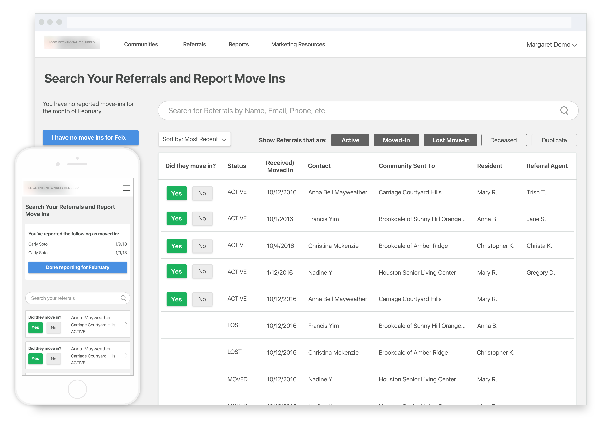Understanding this project takes a little understanding of the senior care industry. We refer customers to senior care providers and are paid a small fee for the referral. You can think of this the same way a real estate agent is paid a comission from landlords for finding them tenants. When partners go in to Portal to mark a referral as moved in, they were getting a negative and confusing experience. Because of this, they weren't reporting move ins. They didn't know how to use the interface and would get frustrated and give up. To fix this, we wanted to do a re-design of the report move in flow.
I was given a set of business goals that I translated to better human experiences. Focusing on these human experiences is like the northern light for my design process. For me, that starts with getting to know the people that will be using our product. I sat with the PM and had casual conversations with some users to just get a feel of how they felt about Partner Portal and how it tied in with their job and what motivates them. In our initial conversations, we focused on the big picture. We let this be the foundation for our product and later dug deeper to add the details.
The first step of the flow is the Referrals page. The problem with this page is that attention is unfocused. There's a lot going on in the page and the user isn't sure what they're supposed to do.
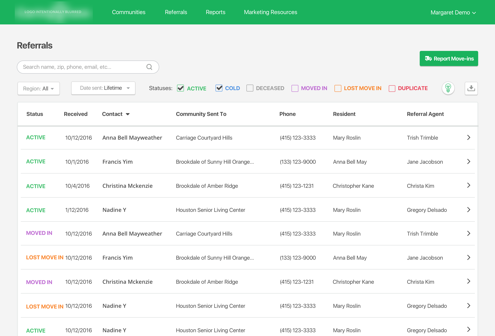When the click the "report move ins" button they get a pop up modal that asks them to click "report move ins" again. It also doesn't make sense here why there is a "report no move ins" option after clicking "report move ins".
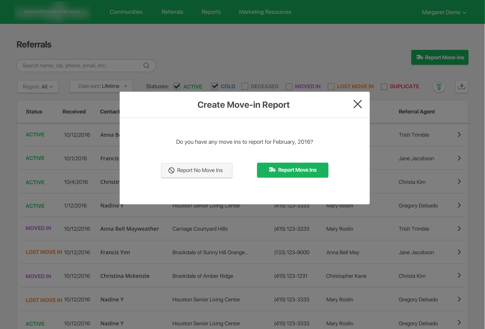The next step takes them to a page that looks a lot like the first referrals page except with even more going on. The user has no idea what to do here and most drop off at this point. The tutorial at the top was meant to help them, but they didn't understand it and would often click the tutorial more than the actual buttons on the page.
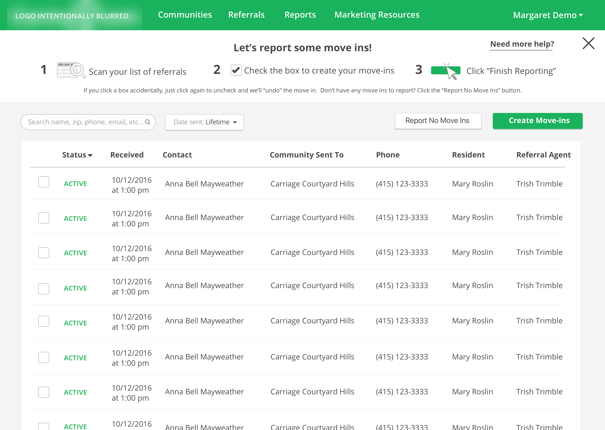The last step of the flow asks for OPTIONAL rent and care information but the way it's deisnged it seemes like this informaton is necessary in order to report the move in. Most partners wouldn't have that information at the time of reporting and would cancel out of the flow.
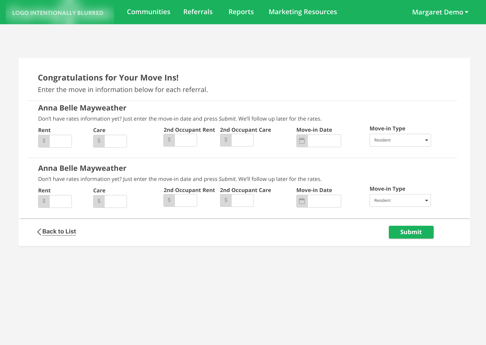So the first step I took to fix this was look at the flow map.
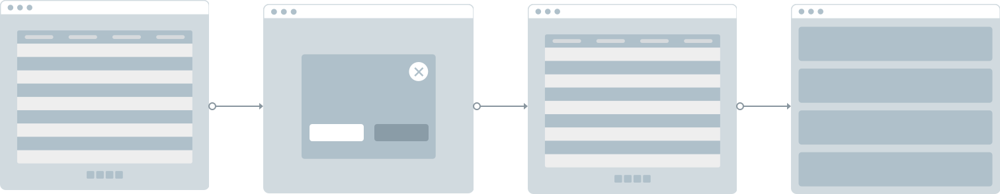It seemed unnecesary to me to have the second and third step in there. Not only were these steps unnecessary, but seniors hate having their options hidden behind buttons.
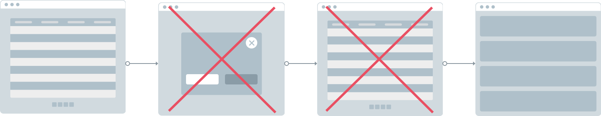So I made both actions immediately available to them on the referrals page. They would be able to report referrals as moved in, or report no move ins for the month directly on the referrals page. I also removed all color from the page to better direct attention towards the most important actions that we wanted the user to take. I figured that power users would be able to use the other features on the page without color ques. I also changed the headline of the page to ensure users would know exactly what to do on the page and what the page was for.
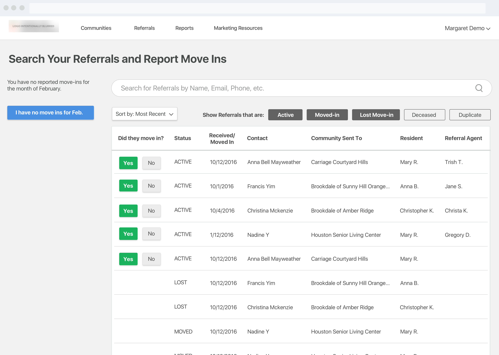Seniors need a lot of hand holding when it comes to technology, but I believe interfaces should be self explanatory instead of having tutorials or wizards. So we got rid of the tutorial and reframed title text to be questions, with action buttons as answers. The flow would walk the user through it step by step, Turbo Tax style.
Optional care and rent cost items would be placed at the end of the flow and made clear that they were optional. It was more clicks, but clearer decisions for the user.
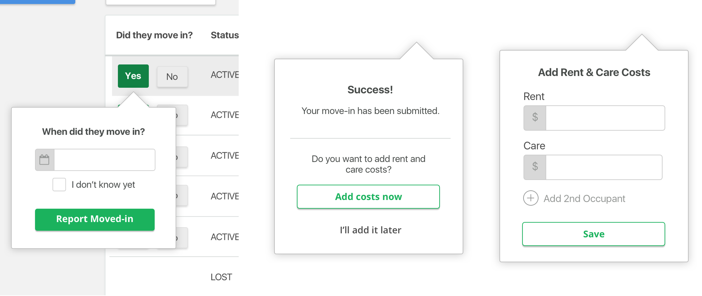I also created a new reporting section that would always live on the left hand side of the page. This allowed users to see what they and others sharing their account, had already reported for the month and submit that when the month was over. The button would be a different color from the report button to indicate that this was a different action that needed attention.
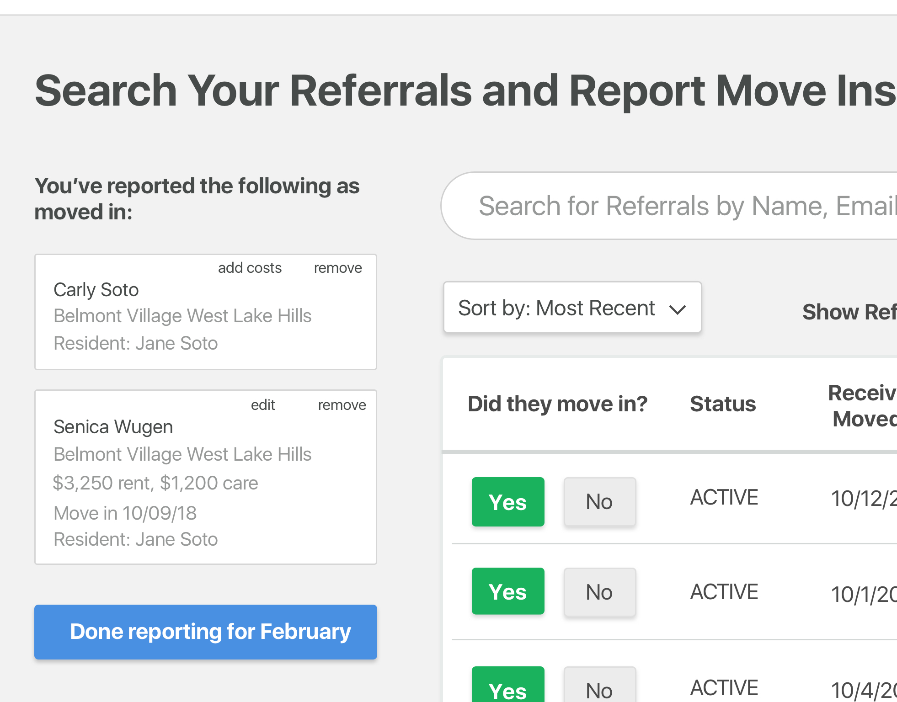The button here would be smart. The copy in it would change depending on the state. The copy would also better reflect what the user was thinking at the time to reduce cognitive load and so they would be more confident in clicking.
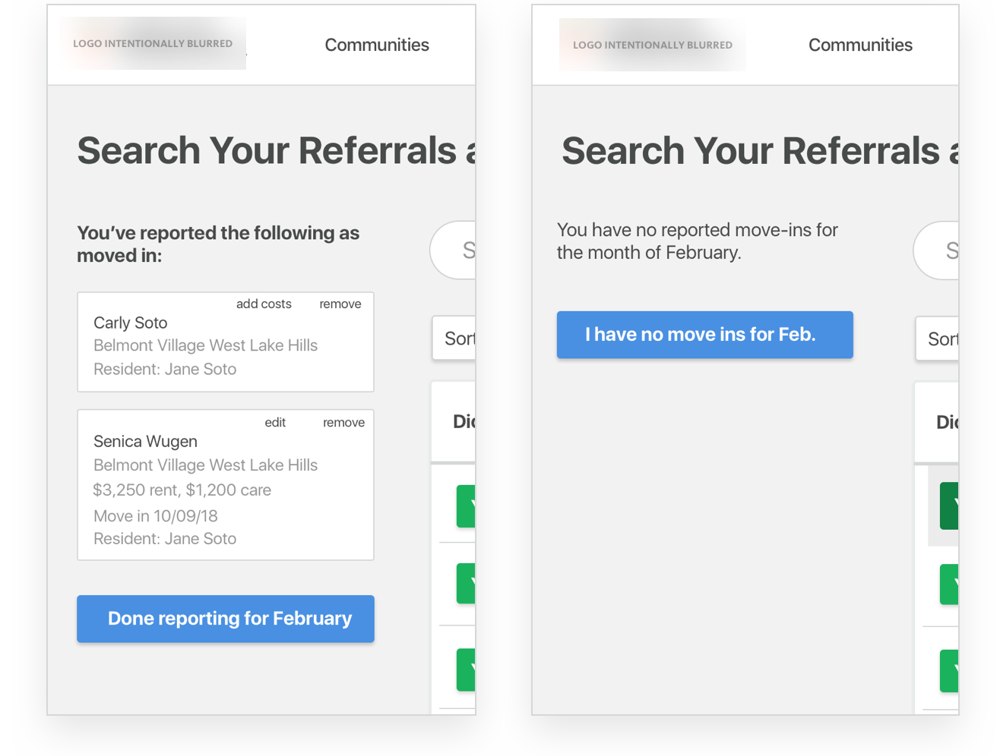I used this opportunity to also capture other information about the referral if they didn't move in, for example was the budget not a good fit? Did the care needs not match? This was something we hadn't done before.
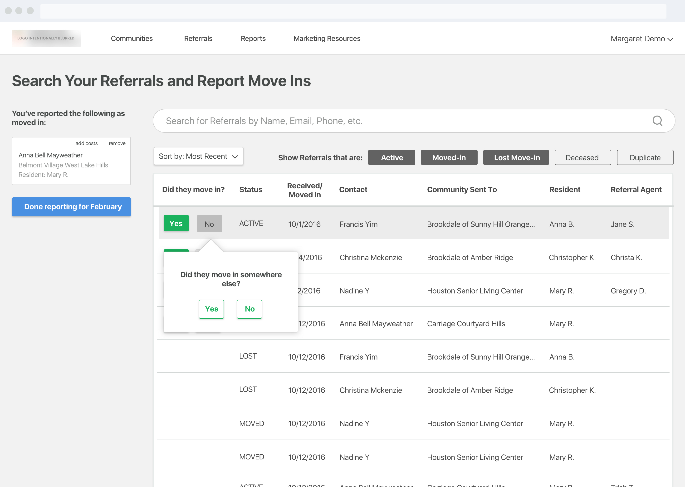Here's the new flow in action:
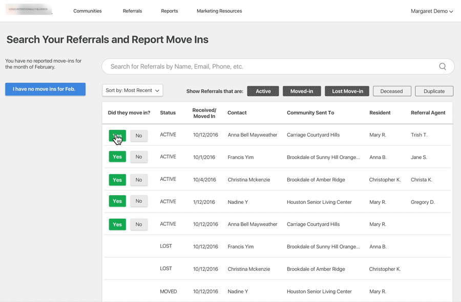We had an overall 31% increase in the number of partners reporting their move ins through portal, which meant a whole lot of nagging from our operations team, which in turn meant a better relationship with our partners. Not only did we save a whole lot in operations costs, but we were also able to gather valuable information about the referral if they did not move in, which meant we could send our partners better referrals in the future making both customers and partners happier.
Portal was one of the first big projects I worked on in my time here and it had a lot of eyes on it. Design is much more than just creating flows and pretty visuals, it's also about collaboration and communication. Managing expectations with stakeholders and working with them every step of the way, made them feel personally invested in my designs and when something didn't work the way we expected it to, blame was not passed around. Instead, there was a collective effort to reinvent and improve.
View on BehanceHave a cool project? Want to get in contact or just want to say hello? Drop me a line.